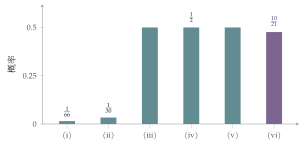

STEP I 2007，第 13 题
继续之前，请先阅读题目（原题为英文）。题目载于 STEP Support Programme 的题目资料库： step.maths.org/questions/07-s1-q13
引子
“已知”（given that）是概率中最危险的字眼。这道题最后四个部分的说法听起来几乎一模一样：编号为 3 的圆片最先被取出；编号为 3 的圆片被取出；最先取出的是一块有编号的圆片；取出的圆片中有一块有编号。其中三个的答案都是 \(\frac12\)，第四个却不是。
这个分别，正正就是著名的“男孩还是女孩”谜题背后的分别（一个家庭有两个孩子，其中至少一个是男孩；两个都是男孩的机会有多大？）。这道谜题难倒了一代又一代的学生，也难倒了不少专业数学家。当中的教训是：条件（condition）是一个精确的陈述，说明哪些结果仍然可能出现；而信息是怎样得来的，与信息本身同样重要。
动笔之前
从十一块圆片中取出四块。对于“四块都有编号”这个事件（event）而言，抽取的次序有没有影响？四块圆片组成的等可能（equally likely）组合共有多少个？
每一个由四块圆片组成的组合被抽中的可能性都相同，所以我们可以不理会次序：共有 \(\binom{11}{4} = 330\) 个等可能的组合。
逐步解题
阶段 1 没有条件
由四块有编号圆片组成的组合有 \(\binom54 = 5\) 个，所以 \[\mathrm{P}(\text{四块都有编号}) = \frac{5}{330} = \frac{1}{66}.\]
阶段 2 3 号最先取出
编号为 3 的圆片最先被抽出之后，余下的三次抽取是怎样的？
其余三块圆片是从余下十块（四块有编号、六块空白）中随机抽出的三块，全部 \(\binom{10}{3} = 120\) 个组合都是等可能的。所以 \[\text{(ii)}\quad \frac{\binom43}{120} = \frac{4}{120} = \frac{1}{30}, \qquad \text{(iii)}\quad \frac{\binom41\binom62}{120} = \frac{4 \times 15}{120} = \frac12,\] 因为在 (iii) 中，其余三块之中必须恰好有一块有编号。
阶段 3 3 号被取出（在某一次）
编号为 3 的圆片是在哪一次抽出的，有没有关系？已知 3 号在四块之中，对其余三块你能说些甚么？
根据对称性（symmetry），已知这四块圆片中包含 3 号，其余三块就是从余下十块中随机抽出的三块，与第 2 阶段完全一样。所以 (iv) 的答案也是 \(\frac12\)。
阶段 4 最先取出的是有编号的圆片
已知第一块圆片有编号（不论是哪个号码），其余三块同样是从余下十块圆片中随机抽出的三块，当中四块有编号、六块空白。所以 (v) 的答案也是 \(\frac12\)。
阶段 5 取出的圆片中有一块有编号
现在的条件是“四块之中至少有一块有编号”。这与之前任何一个条件相同吗？330 个组合之中有多少个符合这个条件？
这个条件有所不同：它没有指明任何一块特定的圆片。只有 \(\binom64 = 15\) 个组合完全没有编号圆片，所以有 \(315\) 个符合条件。其中 \(\binom52\binom62 = 10 \times 15 = 150\) 个恰好包含两块有编号的圆片。所以 \[\text{(vi)}\quad \frac{150}{315} = \frac{10}{21}. \qed\]
为甚么 (vi) 与 (v) 不同？在 (v) 中，我们知道哪一块圆片有编号（第一块），而其余三块不受限制。在 (vi) 中，我们只知道有某一块圆片有编号。含有三块或四块编号圆片的组合，可以用更多方式满足“某一块圆片有编号”，所以它们不会像在 (v) 中那样比重偏低。

回顾
条件会收窄样本空间（sample space）。\(\mathrm{P}(A \mid B)\) 是 \(B\) 的结果之中同时属于 \(A\) 的比例。
对称性可以省功夫。3 号是最先抽出，还是在某一次抽出，并无分别，因为所有位置的地位都相同。
“特定的一个”不等于“至少一个”。听起来相似的条件，选出来的结果集合可以大不相同。
背后的数学
男孩还是女孩的谜题
马丁·加德纳（Martin Gardner）在 1959 年提出这个问题：史密斯先生有两个孩子，其中至少一个是男孩；两个都是男孩的概率是多少？列出等可能的家庭组合 BB、BG、GB、GG，剔除 GG 后剩下三个，其中一个是 BB：答案是 \(\frac13\)。但如果我们知道年长的孩子是男孩，答案就是 \(\frac12\)。这正是我们这道题第 (vi) 和第 (v) 部分的缩影。加德纳后来承认，他最初提出的问题含糊不清：答案取决于我们是怎样得知有一个男孩的。如果我们随机遇上其中一个孩子，而他是男孩，答案是 \(\frac12\)；如果我们问“你有没有至少一个儿子？”而对方回答有，答案就是 \(\frac13\)。概率取决于产生信息的过程，而不仅是信息本身。
蒙提霍尔问题（Monty Hall）
概率中争议最多的谜题，背后也是同一个教训。在一个游戏节目中，三道门的其中一道后面有一辆汽车。你选了 1 号门。主持人知道汽车在哪里，他必定会打开另外两道门的其中一道，让你看到门后是一只山羊，并且必定会让你选择是否换门；当汽车就在你所选的门后，以致他有选择余地时，他会在另外两道门之间随机挑选。他打开了 3 号门，并让你改选 2 号门。你应该换吗？应该：换门后胜出的概率是 \(\frac23\)。主持人选哪道门并非随机；这取决于汽车的位置，因而带有信息。确切的规则十分重要。如果主持人只要可以就一定打开 3 号门，那么看到 3 号门打开，1 号门和 2 号门就变得同样可能，换门后胜出的概率只有 \(\frac12\)；然而，一个事先决定必定换门的参赛者，仍然有 \(\frac23\) 的机会胜出，因为换门胜出，恰好就是第一次选错的时候。Marilyn vos Savant 在 1990 年于杂志专栏中给出这个答案时，收到数以千计的来信指她错了，其中有些更是出自数学家之手。用电脑模拟一次，或者仔细列出各个等可能的情况，就可以解决争议。
条件概率（conditional probability）的系统化基础，是由托马斯·贝叶斯（Thomas Bayes）和皮埃尔–西蒙·拉普拉斯（Pierre-Simon Laplace）奠定的：贝叶斯的论文在他死后于 1763 年发表，而拉普拉斯则在 1774 年以一般形式写出了现称为贝叶斯定理（Bayes’ theorem）的法则。安德烈·柯尔莫哥洛夫（Andrey Kolmogorov）在 1933 年提出的公理（axioms），是现今每一个大学课程的起点，当中定义 \(\mathrm{P}(A \mid B) = \mathrm{P}(A \cap B)/\mathrm{P}(B)\)，而概率论的其余部分都建基于这个定义之上。下一节 第 12.2 节 会展示贝叶斯定理在实际应用中的作用。
思维技巧
计算条件概率之前，先确切写下哪些结果符合条件。问一问信息是怎样得来的。
在大学里，条件概率和条件期望（conditional expectation）是概率与统计中最重要的工具之一，也是最常出错的地方。把样本空间写出来，至少就一个小规模的情况写出来，是最好的防范方法。
延伸练习
推广。设有 \(b\) 块空白圆片和 \(n\) 块有编号的圆片，从中抽出 \(k\) 块，证明 (iv) 和 (v) 的答案永远相等，并求出 (vi) 在甚么情况下与它们相等。
星期二出生的男孩。一个家庭有两个孩子，其中至少一个是在星期二出生的男孩。证明两个都是男孩的概率是 \(\frac{13}{27}\)。（列出 \(14 \times 14\) 个等可能的情况，或者用巧妙的方法计数。）
蒙提霍尔问题。列出各个结果，验证 \(\frac23\) 这个答案。如果主持人不知道汽车在哪里，随机打开另外两道门的其中一道，而门后刚好是一只山羊，那又如何？
两张 A。一手 \(13\) 张的桥牌中至少有一张 A。这手牌中至少有两张 A 的概率是多少？试与已知这手牌中有葵扇 A 时的概率比较。
延伸阅读
Jason Rosenhouse, The Monty Hall Problem（Oxford University Press）。讲述这道谜题、它的历史，以及它的众多变化。
Geoffrey Grimmett & Dominic Welsh, Probability: An Introduction（Oxford University Press），有关条件概率的各章。
Joseph Blitzstein & Jessica Hwang, Introduction to Probability（CRC Press；可于网上免费阅读）。对条件概率的处理十分出色，并载有许多悖论。